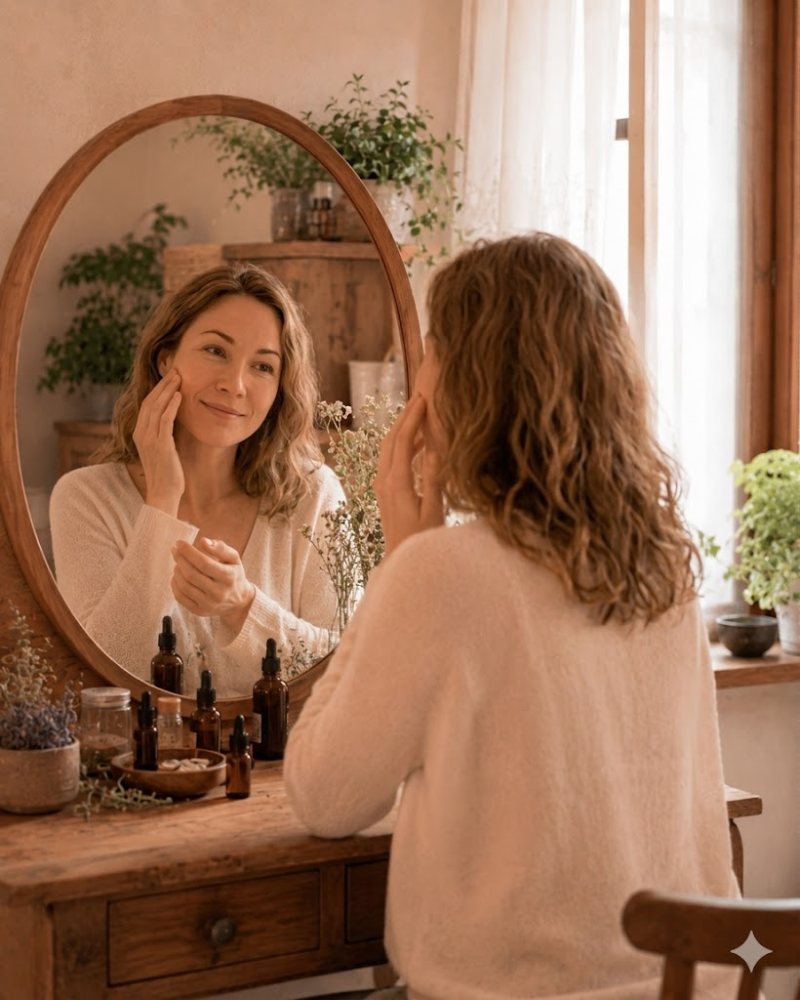
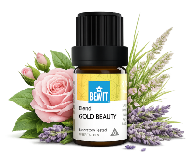

Přirozená krása začíná péčí zevnitř i zvenku. Esence mohou být součástí vašeho ranního nebo večerního rituálu — jednoduché, přírodní a účinné. Vaše pleť si zaslouží to nejlepší z přírody. Výsledky přicházejí s pravidelností — dopřejte si čas.

pro přirozenou krásu
Když hledáte přírodní cestu ke zdravé a zářivé pleti. Ukáži vám, jak esence podpoří přirozenou krásu vaší pokožky jednoduše a bez zbytečné chemie.


Univerzální směs krásy pro každodenní péči o pleť.
Podporuje rozjasnění, hydrataci a přirozenou regeneraci pokožky.
🌿 Přidejte 1–2 kapky do svého denního nebo nočního krému.
Nebo smíchejte 1 kapku esenciální směsi se 2 lžícemi kosmetického oleje (např. jojobového) a jemně vmasírujte do pleti.
💧 Naneste 1 kapku na problematické místo večer, nebo přidejte do krému bez vůně.
Chci čistou pleť💧 Přidejte 1–2 kapky do denního nebo nočního krému, případně naředěné naneste na podrážděná místa.
Chci zklidnění💧 Naneste naředěné přímo na pigmentové skvrny, pravidelně a dlouhodobě pro nejlepší výsledek.
Chci sjednotit tón💧 Použijte samotný jako hydratační olej, nebo jako základ pro ředění esenciálních olejů do pleťové péče.
Chci vyzkoušet mandlový olejChcete si péči o pleť vyrobit sami doma? V lekci Péče o pleť najdete šest receptů — krém, masku, čištění, odličovač a další. Pro problematickou pleť je tu navíc lekce Pleť s akné se čtyřmi recepty.
Přirozená krása začíná péčí zevnitř i zvenku. Esence mohou být součástí vašeho ranního nebo večerního rituálu — jednoduché, přírodní a účinné. Vaše pleť si zaslouží to nejlepší z přírody. Výsledky přicházejí s pravidelností — dopřejte si čas.
Přírodní péče bývá pomalejší než agresivní kosmetika, ale výsledek je trvalejší — počítejte s 3–6 týdny pravidelného používání.
Ano, směsi jako GOLD SENSITIVE nebo GOLD A jsou vytvořené přímo pro tyto potřeby. Přesto doporučuji nový produkt nejdřív vyzkoušet na malé ploše kůže.
Obojí funguje — nejjednodušší je přidat pár kapek přímo do krému bez vůně. Pokud chcete esenci nanášet samostatně, vždy ji nejdřív nařeďte v nosném oleji.
🌿 Všechny esence, které na tomto webu doporučuji, jsou od BEWIT. Jako registrovaný zákazník můžete nakupovat se slevou až 50 % na vybrané produkty.
Registrace u BEWIT zdarma →